2022.12.12
注意⚠️：
AVL树的结点数的公式，假设高度为h：
【nh表示高度为h的AVL树的最少结点数】 $$ n_h = n_{h-1}+n_{h-2}+1 $$
- h = 1, n = 1
- h = 2, n = 2
- h = 3, n = 4
- h = 4, n = 7
- ......
AVL树的思想：左右子树高度差<1
AVL树的插入：先插入，再调整。
左旋：RR
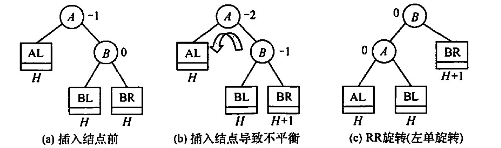
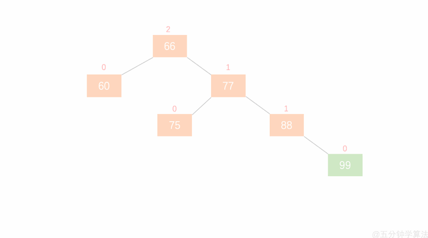
右旋：LL
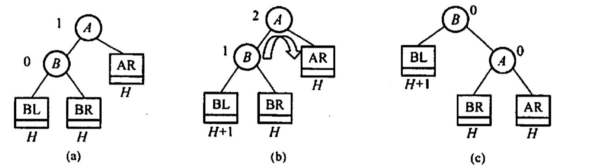
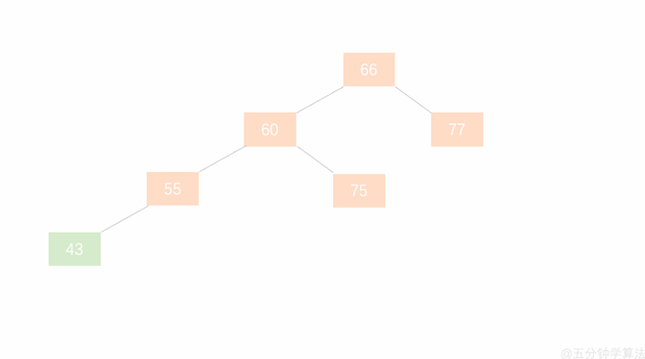
先左后右：LR
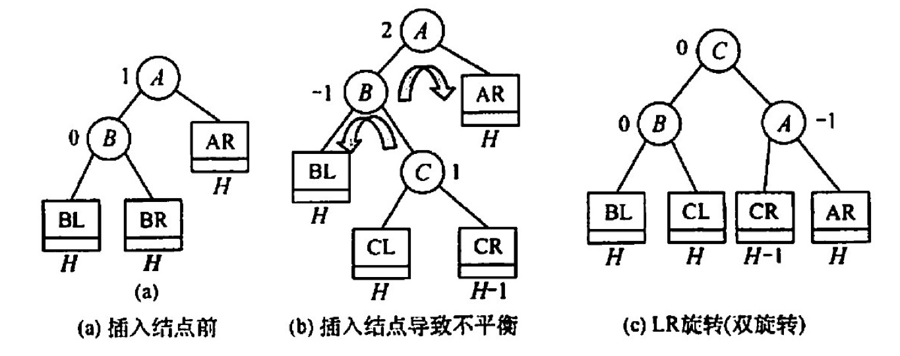
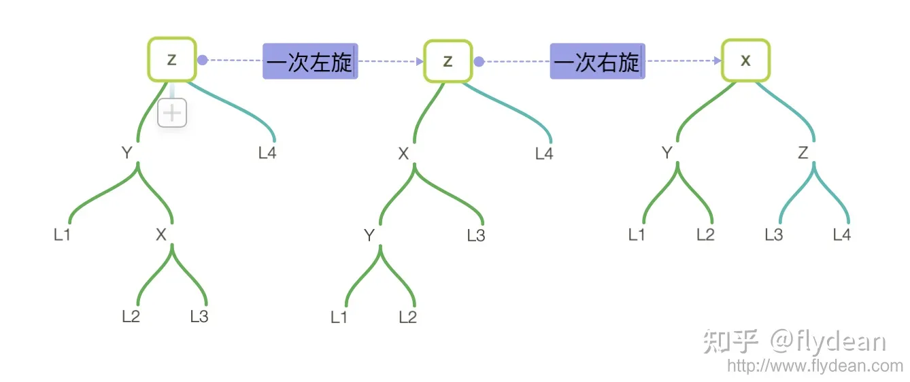
先右后左：RL
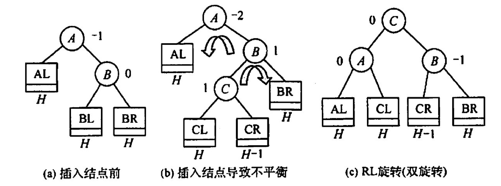
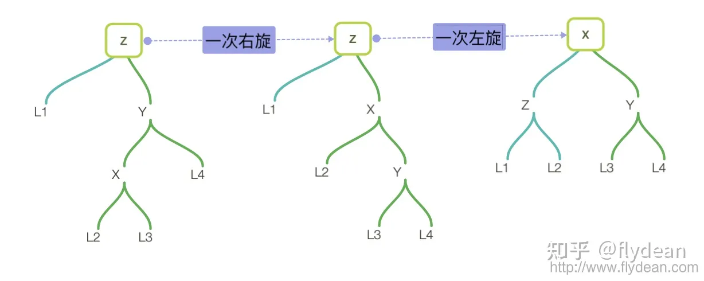
AVL树的删除：删完了在进行上述的旋转
⭕️ 知乎红黑树专题：https://www.zhihu.com/topic/19648609/hot
✨ 红黑树定义与插入：https://www.bilibili.com/video/BV1BB4y1X7u3/
✨ 红黑树的删除：https://www.bilibili.com/video/BV1Ce4y1Q76H
https://www.zhihu.com/question/30317295/answer/1246106121
红黑树的定义：
根结点：黑色
根叶黑，不红红，黑路同
概念与结论
黑高：从某一结点(不含)到叶子结点路径上黑结点的个数叫黑高。根结点的黑高称为红黑树的黑高
从根结点到叶子结点的最长路径不大于最短路径的2倍。最短路径一定是全黑，路径最长时一定n红+n黑
有n个内部结点的红黑树的高度h≤log_2 (n+1)
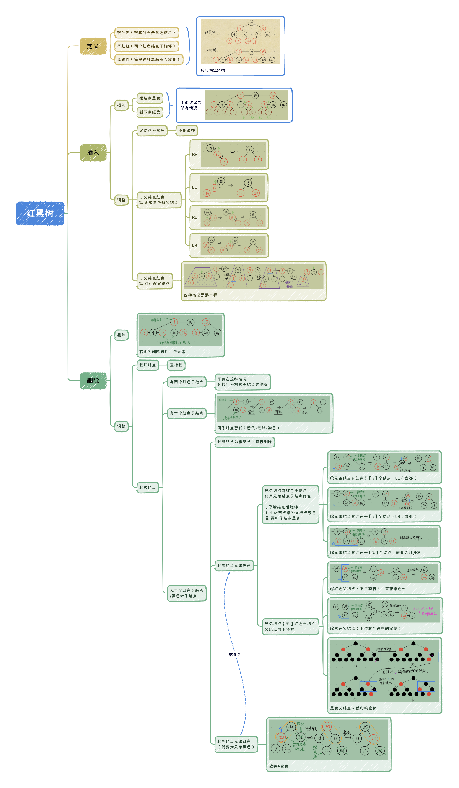
红黑树删除妙记：
每个人都有一颗心。有的人，心是红的；有的人，心是黑的。
红心的人善良，遇到事情自己扛。而黑心的人总想着利用别人，真是还要拉人下水！
让一个红心的人离开，她真的就兀自走开了。(直接删除红色叶子结点)
但当一个心黑的人离开，他一定要搞一些事情，而且还从身边的人下手！
一个心黑的人离开，他会对自己的唯一的孩子痛下杀手，让天真的孩子变成昔日的自己。（黑结点有一个红孩子，删除黑结点，红孩子染黑）
当这个心黑的人没有孩子，他就会对自己兄弟下手。可笑的事，不是一家人，不进一家门。心黑的人通常有个心黑的兄弟。黑心兄弟发现有人害自己，赶紧把自己的苦难转移给别人。（黑叶子结点+黑色兄弟的情况）
这个黑心的兄弟不仅残害自己的善良的孩子，还欺负自己年迈的父亲。黑心的兄弟谋朝篡位，自己当爷爷，让原来的爷爷和自己善良的孩子变得心黑（删除黑叶子，黑色兄弟有红孩子，LL和RR情况）。当然也有另一种可能，他善良的孩子由于耳濡目染，也学起了自己的父亲，并做了孙子当爷爷的勾当（删除黑叶子，黑色兄弟有红孩子，LR和RL情况）！
更有趣的是，当这个心黑的人和他黑心的兄弟都没有孩子时，这两个人便打起了他们老父亲的主意。当父亲是个善良的人时，可怜的父亲愿意背负起孩子的罪恶，替孩子赎罪。（删除黑叶子，黑色兄弟无红孩子，父结点为红色，父结点与兄弟结点交换颜色）
当黑心人与黑心兄弟赶上了黑心的父亲，这才是真的坏透了。然而物极必反，黑心兄弟良心发现！不过这仍阻止不了黑心人与黑心父亲惦记起了更年迈的曾爷爷😭。此时，黑心的爷爷仿佛成了上文的黑心人。（删除黑叶子，黑色兄弟无红孩子，父结点为黑色，兄弟结点变红，爷结点当成删除的结点进行递归）
有些人说，一个黑心人也可能没有黑心兄弟。确实，不过经实验表明，善良的兄弟会被黑心人同化，导致上述故事的重演。（删除黑叶子，红色兄弟，通过旋转+变色，转换为黑兄弟情况）
所以，屏幕前的你，请保持善良。否则，主的审判迅速降临。
BSTNode *BSTSearch(BSTree &_T,Element e,BSTree &father){
BSTNode *T = _T;
father=NULL;
while(T!=NULL && ele_get_weight(T->data)!= ele_get_weight(e)){
visit(T);
if(ele_get_weight(e) < ele_get_weight(T->data))
{father=T;T=T->lchild;}
else
{father=T;T=T->rchild;}
}
return T;
}
bool BSTInsert(BSTree &p,Element e){
BSTNode *q = p;
if(q==NULL){
InitTree(p);
SetTreeData(p,e);
return true;
}
while(1){
visit(q);
if(ele_get_weight(e)< ele_get_weight(q->data))
if(q->lchild == NULL)
return InsertLeftTree(q,e);
else
q = q->lchild;
else if(ele_get_weight(e)> ele_get_weight(q->data))
if(q->rchild == NULL)
return InsertRightTree(q,e);
else
q = q->rchild;
else
return false;
}
}
bool BSTDelete1(BSTree &p,BSTree &father){
if(father->rchild==p)
father->rchild=NULL;
else
father->lchild=NULL;
free(p);
return true;
}
bool BSTDelete2(BSTree &p,BSTree &father){
BSTNode *q = NULL;
if(p->rchild==NULL)
q=p->lchild;
else
q=p->rchild;
if(father->rchild==p)
father->rchild=q;
else
father->lchild=q;
free(p);
return true;
}
bool BSTDelete(BSTree &T, Element e){
BSTNode *father;
BSTNode *p = BSTSearch(T,e,father);
if(p==NULL) return false;
// 如果是叶子结点——直接删除
if(p->rchild==NULL&&p->lchild==NULL){
return BSTDelete1(p,father);
}
// 如果左子树或右子树为空
if(p->rchild==NULL||p->lchild==NULL){
return BSTDelete2(p,father);
}
// 左子树右子树都非空 - 找到左边的最右下或右边的最左下
BSTNode *q = p->rchild; // 本案例找到右边的最左下
if(q->rchild==NULL && q->lchild==NULL){ // 子树只有一层，自己就是最左下
ele_copy(p->data,q->data);
return BSTDelete1(q,p);
}
BSTNode *qf = p;
while(1){ // 找最左下并把结点复制到待删除结点位置
if(q->lchild==NULL){
ele_copy(p->data,q->data);
break;
}else{
qf=q;
q=q->lchild;
}
}
if(q->rchild==NULL)
return BSTDelete1(q,qf);
else{
ele_copy(q->data,q->rchild->data);
return BSTDelete2(q,qf);
}
}
运行结果展示
============================
二叉排序树
二叉排序树的构建
Insert 19 :
先序遍历 : 19
Insert 13 :19
先序遍历 : 19 13
Insert 50 :19
先序遍历 : 19 13 50
Insert 11 :19 13
先序遍历 : 19 13 11 50
Insert 26 :19 50
先序遍历 : 19 13 11 50 26
Insert 66 :19 50
先序遍历 : 19 13 11 50 26 66
Insert 21 :19 50 26
先序遍历 : 19 13 11 50 26 21 66
Insert 30 :19 50 26
先序遍历 : 19 13 11 50 26 21 30 66
Insert 60 :19 50 66
先序遍历 : 19 13 11 50 26 21 30 66 60
Insert 70 :19 50 66
先序遍历 : 19 13 11 50 26 21 30 66 60 70
得到二叉排序树:
A-19
/ \
B-13 C-50
/ / \
D-11 E-26 F-66
/ \ / \
G-21 H-30 I-60 J-70
寻找值为n的结点
60是否存在: 19 50 66
71是否存在: 19 50 66 70
26是否存在: 19 50
插入结点
插入71:19 50 66 70
插入31:19 50 26 30
A-19
/ \
B-13 C-50
/ / \
D-11 E-26 F-66
/ \ / \
G-21 H-30 I-60 J-70
\ \
K-31 L-71
删除结点
删除叶子结点 31 - 直接删除 - 19 50 26 30
先序遍历 : 19 13 11 50 26 21 30 66 60 70 71
中序遍历 : 11 13 19 21 26 30 50 60 66 70 71
删除结点左或右子树为空 13 - 用子树替代自己 - 19
先序遍历 : 19 11 50 26 21 30 66 60 70 71
中序遍历 : 11 19 21 26 30 50 60 66 70 71
删除结点左右子树非空 66 - 找右边最左下 - 19 50
先序遍历 : 19 11 50 26 21 30 70 60 71
中序遍历 : 11 19 21 26 30 50 60 70 71
删除结点左右子树非空 26 - 用子树替代自己 - 19 50
先序遍历 : 19 11 50 30 21 70 60 71
中序遍历 : 11 19 21 30 50 60 70 71
AVL树代码实现：https://zhuanlan.zhihu.com/p/430037242
红黑树代码实现：https://www.cnblogs.com/kangsir/p/6653279.html
【答案】：C
【答案】：B
【答案】：A
【答案】：B
【答案】：C
【答案】：C
【答案】：A
【答案】：D
【答案】：D
不可能生成如下图所示的二叉排序树的关键宇序列是（）
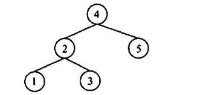
A. {4, 2, 1, 3, 5} B. (4, 2, 5, 3, 1} C. {4, 5, 2, 1, 3} D. {4, 5, 1, 2, 3}
【答案】：D
含有20个结点的平衡二叉树的最大深度（） A. 4 B. 5 C. 6 D. 7
【答案】：C
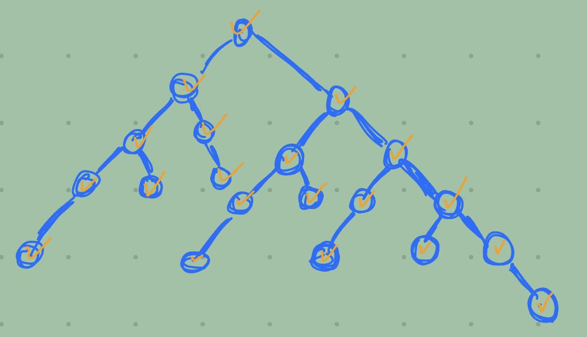
具有5层结点的 AVL 至少有（）个结点 A. 10 B. 12 C. 15 D. 17
【答案】：B
下列关于红黑树的说法中，不正确的是(） A. 一棵含有n个结点的红黑树的高度至多为2log2(n+1） B. 如果一个结点是红色的，则它的父结点和孩子结点都是黑色的 C. 从一个结点到其子孙结点的所有路径上包含相同数量的黑结点 D. 红黑树的查询效率一般要优于含有相同结点数的 AVL 树
【答案】：D
下列关于红黑树和 AVL 树的描述中，不正确的是（ ）。 A. 两者都属于自平衡的二叉树 B. 两者查找、插入、删除的时问复杂度都相同 C. 红黑树插入和删除过程至多有2次旋转操作 D. 红黑树的任一结点的左右子树高度之差不超过2倍
【答案】：B -> C，递归的情况
下列关于红黑树的说法中，正确的是(）。 A. 红黑树是一种特殊的平衡二叉树 B. 如果红黑树的所有结点都是黑色的，那么它一定是一棵满二叉树 C. 红黑树的任何一个分支结点都有两个非空孩子结点 D. 红黑树的子树也一定是红黑树
【答案】：B
将关键字 1,2,3,4,5,6,7依次插入初始为空的红黑树T，则了中红结点的个数是（） A. 1 B. 2 C. 3 D. 4
【答案】：C
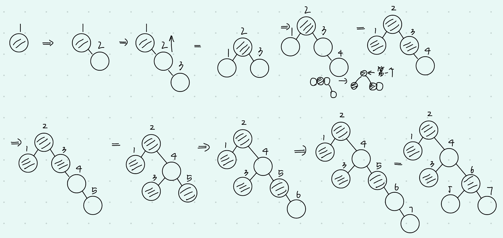
将关键宇5,4,3,2,1依次插入初始为空的红黑树T，则下的最终形态是（）。
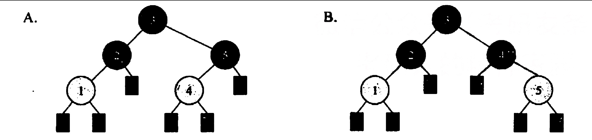
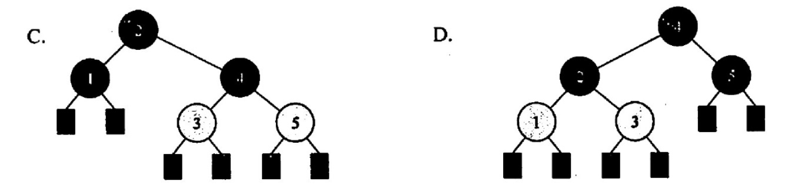
【答案】：D
【2009統考真题】下列二叉排序树中，满足平衡二叉树定义的是（ ）
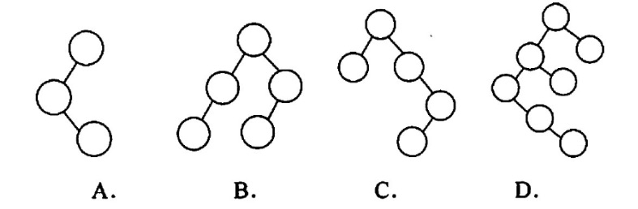
【答案】：B
【2010 统考真题】在下图所示的平衡二叉树中插入关键字 48 后得到一棵新平衡二叉树，在新平衡二叉树中，关键字 37 所在结点的左、右子结点中保存的关鍵字分别是（ ）
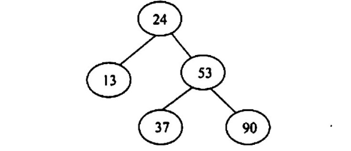
A. 13.48 B. 24.48 C. 24.53 D. 24.90
【答案】：C
【2011 统考真题】对下列关键宇序列，不可能构成某二叉排序树中一条查找路径的是（ ）。 A. 95.22.91.24.94.71 B. 92.20.91.34.88.35 C. 21,89,77,29,36,38 D. 12.25.71.68.33.34
【答案】：A
【2012 統考卖题】若平衡二叉树的高度为6，且所有非叶子结点的平衡因子均为 1，则该平衡二叉树的结点总数为（ ）。 A. 12 B. 20 C. 32 D. 33
【答案】：B
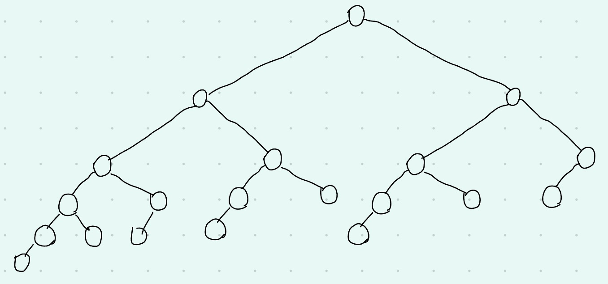
【2013 统考真题】在任意一棵非空二叉排序树T1中，删除某结点v之后形成二叉排序树T2，再将v插入T2形成二叉排序树T3。下列关于T1与T3的叙述中，正确的是（ ). I. 若v是T1的叶结点，则T1与T3不同 II. 若v是T1的叶结点，则T1与T3相同 III.芳v不是T1的叶结点，则T1与T3不同 IV. 若v不是T1的叶结点，则T1与T3相同 A.仅I、III B.仅I、IV C.仅II、III D.仅II、IV
【答案】：C
【2013 統考真题】若将关键字 1,2,3,4,5,6,7依次插入初始为空的平衡二叉树T，则T中平衡因子为0的分支结点的个效结点的个数是（） A. 0 B. 1 C. 2 D. 3
【答案】：D
【2015 统考真题】 现有一探无重复关键字的平衡二叉树(AVL树)对实进行中序遍历可得到一个降序序列。下列关于该平街二叉树的飯述中，正确的是（）。 A. 根结点的度一定为2 B. 树中最小元素一定是叶结 C. 最后插入的元素一定是叶子结点 D. 树中最大元素一定是无左子树
【答案】：B -> D
【2018 统考真题】已知二叉排序树如下图所示，元素之问应满足的大小关系是
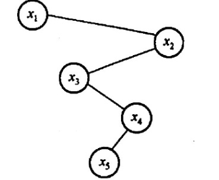
A. x1<x2<x5 B. x1<x4<x5 C. x3<x5<x4 D. x4<x3<x5
【答案】：C
【2019 统考真题】在任意一棵非空平衡二叉树（AVL树）T1中，删除某结点v之后形成平衡二叉树T2，再将v插入 T2 形成平衡二叉树T3。下列关于T1与T3的叙述中，正确的是（） I.若v是T1的叶结点，则T1与T3可能不相同 II.若v不是T1的叶结点，则T1与T3一定不相同 III.若v不是T1的叶结点，则T1与T3一定相同 A.仅I B.仅II C.仅1II D.I, III
【答案】：A
【2020 统考真题】下列给定的关键宇输入序列中，不能生成右边二叉排序树的是（〉 A. 4, 5, 2, 1, 3 B. 4, S, 1, 2, 3 C. 4,2,5,3,1 D. 4,2,1.3,5
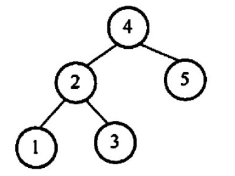
【答案】：B
【2021 统考真题】给定平街二叉树如下图所示，插入关键宇23后，根中的关键字是（，
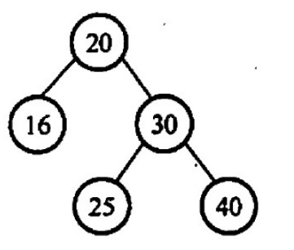
A. 16 B. 20 C. 23 D. 25
【答案】：D
{kind=link}